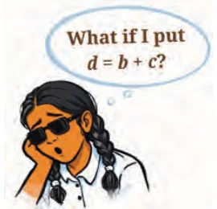
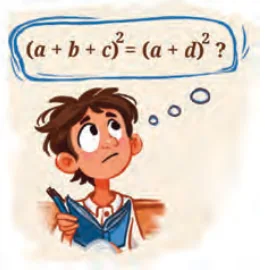
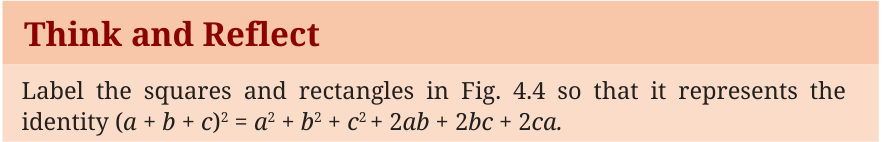

What will happen if we want to find the square of the sum of three
numbers a, b and c, that is, (a \(+ b +\) c) ? Let us replace \(b + c\) by d.

We already know, (a + d) \(= a + 2ad + d\) . Thus, replacing d by (b + c), we get
\(a + 2ad + d = a + 2a(b +\) c) + (b + c) .
So, (a \(+ b +\) c) \(= a + 2ab + 2ac + b + 2bc + c\) .
It may be more convenient to remember this as.
(a \(+ b +\) c) \(= a + b + c + 2ab + 2bc + 2ca\).

Let us interpret this geometrically by drawing a square of side \(a + b + c\) as shown in Fig. 4.4.

identity (a \(+ b +\) c) \(= a + b + c + 2ab + 2bc + 2ca\)

Example 9: Let us use this identity to find the square of a number, say 119:
\(119 = (100 + 10 + 9)\)
\(= 100 + 10 + 9 + 2(100)(10) + 2(100)(9) + 2(10)(9) = 10000 + 100 + 81 + 2000 + 1800 + 180 = 14161\).
So far we have verified the following three identities and used them for performing calculations and manipulating algebraic expressions:
- 1.(a + b) \(= a + 2ab + b\)
- 2.(a - b) \(= a - 2ab + b\)
- 3.(a \(+ b +\) c) \(= a + b + c + 2ab + 2bc + 2ca\)
- 1.Find the following squares using one of the above identities.
Determine which of these identities will make these calculations easier.
- (i)117 (ii) 78 (iii) 198
- (iv)214 (v) 1104 (vi) 1120